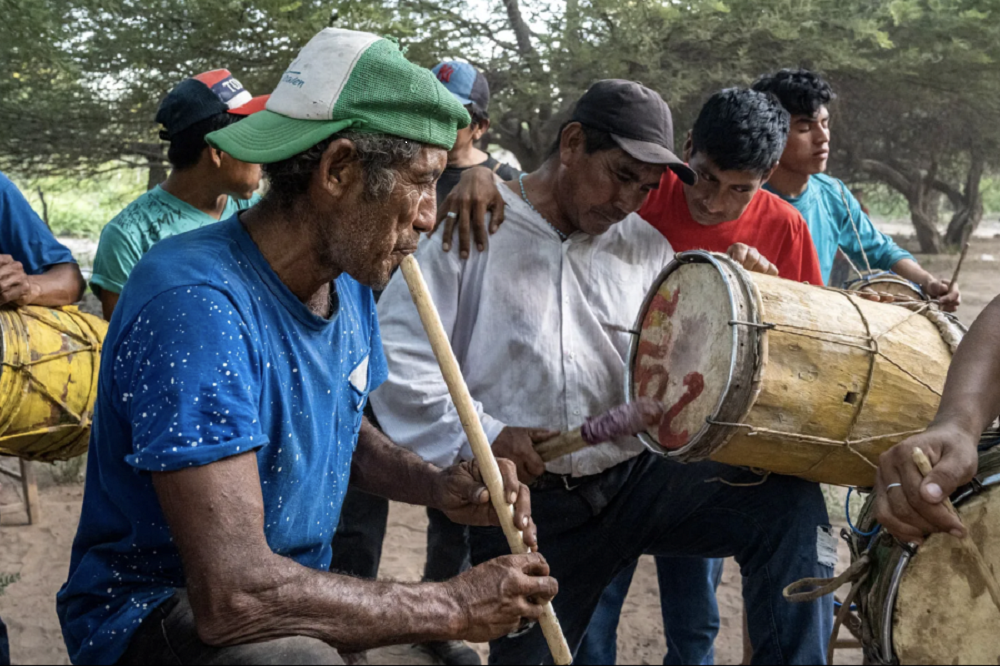

El temímby guásu de los Ava
Nota 024
Inicio > Blog Bitácora de un músico > Nota 024
Los Ava, un pueblo de habla guaraní de las tierras bajas de Bolivia y Argentina, preservaron una compleja tradición musical modelada por influencias amazónicas, arawak, andinas y coloniales, pese a siglos de guerras, desplazamientos e intervención misionera. Estrechamente vinculada a rituales como el aréte guásu, su herencia musical incluye tambores, flautas, trompetas, silbatos, idiófonos y el singular violín turumi, generalmente elaborados artesanalmente por los propios intérpretes e insertos en prácticas ceremoniales, sociales y simbólicas que articulan música, danza, memoria, sexualidad, guerra y relaciones entre vivos y muertos.
El temímby guásu tiene un tamaño enorme que hace honor a su nombre, "flauta grande". Es un aerófono similar a los erasos o requintos del conjunto de pinkillos mohoseños del altiplano boliviano.
Es una flauta vertical que supera fácilmente el metro de longitud. Tradicionalmente se fabricaba con caña takuara, aunque hoy en día se utilizan tubos de hierro de hasta 5 cm de diámetro. Tiene cinco orificios para los dedos en la parte frontal, en su mitad distal, y produce dos octavas de una escala pentatónica. Su boquilla es la de una flauta dulce, aunque, al igual que en los pinkillos mohoseños y otras flautas andinas grandes, tanto el conducto de aire como el pico se encuentran en el lado opuesto (posterior) del instrumento, una característica que facilita su ejecución.
Su uso es limitado. Generalmente lo utilizan hombres adultos, acompañados por uno o más michi rái, para atraer a las mujeres.
Más información sobre estos artefactos sonoros puede encontrarse en el libro digital de acceso libre Instrumentos musicales de los Ava, accesible a través de la sección "Libros digitales sobre música. Serie 1".